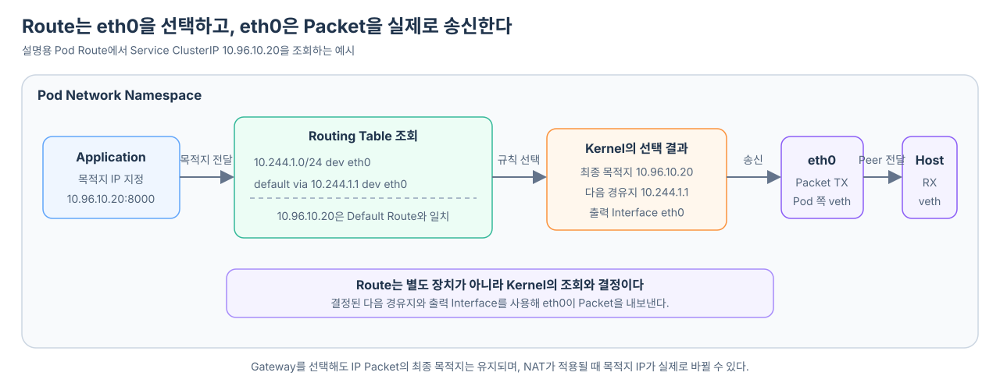

veth pair로 Pod 형태의 Network Namespace와 Host Network Namespace를 연결해도 Packet이 자동으로 eth0으로 나가는 것은 아니다. Application이 IP 기반 통신을 시작하면 Linux Kernel은 해당 Network Namespace의 Routing 정보를 조회한다. 그 결과에 따라 Packet을 현재 Namespace 안에서 처리할지, lo나 eth0으로 내보낼지, Gateway를 사용할지 또는 도달할 수 없는 목적지로 처리할지를 결정한다.
Application이 처음부터 IP가 아니라 model-server 같은 도메인 이름만 알고 있다면, 이 Route 조회에 앞서 이름을 IP로 해석해야 한다. Cache·hosts·CoreDNS를 거치는 이름 해석과 응답받은 IP로 보내는 실제 요청이 어떻게 분리되는지는 Pod에서 도메인은 어떻게 실제 요청으로 이어질까?에서 살펴본다.
여기서 Route와 eth0은 서로 다른 종류의 요소다.
Route
→ 목적지에 따라 어디로 내보낼지 정하는 규칙과 결정 과정
eth0
→ 결정된 Packet을 실제로 송수신하는 Network Interface

IP Packet은 먼저 Route 판단을 받는다
Pod의 Application이 IPv4나 IPv6 Packet을 보내면 Linux Kernel은 해당 Pod Network Namespace의 Routing 정보를 조회해 처리 경로를 결정한다. Application이 직접 eth0을 선택하거나 Packet을 특정 Gateway로 밀어 넣는 것이 아니다.
Route 판단은 외부 Network로 나갈 때만 필요한 과정도 아니다. 목적지에 따라 결과가 달라진다.
| 목적지 예시 | Route 판단 결과 |
|---|---|
127.0.0.1 |
Local Route에 따라 Loopback Interface인 lo로 전달한다. |
| Pod 자신의 IP | 현재 Network Namespace의 Local Network Stack으로 전달한다. |
| 직접 연결된 Pod 대역 | 구성된 Route에 따라 Gateway 없이 eth0으로 송신할 수 있다. |
| Service ClusterIP | 일반적인 veth 기반 구성에서는 Default Route를 따라 eth0으로 송신한 뒤 Node의 Service 규칙을 만난다. |
| 외부 IP | Default Route가 지정한 Interface와 Gateway 방향으로 송신한다. |
| 일치하는 경로가 없는 주소 | Kernel이 도달 불가능하다고 판단해 Application에 오류를 돌려준다. |
Application이 목적지 IP 지정
→ Kernel이 Routing 정보 조회
→ 처리 방법 결정
├─ Local Network Stack에 전달
├─ lo로 전달
├─ eth0으로 직접 송신
├─ eth0을 통해 Gateway로 송신
└─ 도달 불가능 오류 반환
따라서 “Packet이 Routing Table을 거친다”는 말은 Routing Table이 Network 장치처럼 Packet을 받아 전달한다는 뜻이 아니다. 정확히는 Kernel이 Packet을 처리하기 전에 Routing 정보를 조회하고 그 결과에 따라 Packet의 운명을 결정한다는 뜻이다.
이 원칙의 범위는 IP 기반 통신이다. Process 내부 호출이나 Unix Domain Socket처럼 IP Packet을 만들지 않는 통신은 IP Routing의 대상이 아니다.
eth0은 Network Namespace 안에 존재하는 Interface다
Network Interface는 Linux Kernel이 Packet을 송수신하는 출입구다. eth0은 Interface에 붙은 이름이며, 이름 자체가 물리 Ethernet 장치라는 뜻은 아니다.
일반 Linux Machine의 eth0은 물리 Network Card를 나타낼 수도 있다. Container나 Kubernetes Pod 안에서는 veth pair의 한쪽 끝을 해당 Network Namespace로 옮긴 뒤 eth0으로 이름을 바꾼 경우가 많다.
Pod Network Namespace Host Network Namespace
Pod 쪽 veth 끝점 Host 쪽 veth 끝점
이름: eth0 ══ veth pair ══ 이름: vethXXXX
Pod의 eth0은 보통 다음과 같은 상태를 가진다.
| 상태 | 의미 |
|---|---|
| Interface 이름 | Namespace 안에서 장치를 구분하는 eth0 |
| IP 주소 | Pod가 자신의 주소로 사용하는 10.244.1.5 같은 값 |
| MAC 주소 | Ethernet Frame에서 사용하는 Link 계층 주소 |
| MTU | 한 Frame에 담을 수 있는 최대 크기 |
| Link 상태 | Packet을 송수신할 수 있는 UP 또는 중지된 DOWN |
Application은 일반적으로 eth0에 직접 Packet을 쓰지 않는다. Socket에 목적지 IP와 Port를 지정하면 Kernel이 적절한 Interface를 결정한다.
Route는 장치가 아니라 Routing Table의 규칙이다
Routing Table은 목적지 IP에 따라 다음 경로를 선택하는 규칙들의 집합이다. 각 Network Namespace는 자신의 Routing Table을 가질 수 있다.
Route 하나는 보통 다음 정보를 표현한다.
어느 목적지 대역에 적용되는가
→ 다음 경유지는 누구인가
→ 어느 Interface로 내보내는가
→ 필요하면 어느 출발지 IP를 사용하는가
설명을 위한 Pod Routing Table을 생각해 보자.
10.244.1.0/24 dev eth0 src 10.244.1.5
default via 10.244.1.1 dev eth0
첫 번째 Route는 10.244.1.0/24 대역으로 가는 Packet을 eth0으로 직접 내보내라는 의미다. 두 번째 Default Route는 더 구체적인 규칙과 일치하지 않는 나머지 목적지를 10.244.1.1이라는 다음 경유지 방향으로 보내되, 출력 Interface로 eth0을 사용하라는 의미다.
실제 CNI 구현에 따라 Gateway 주소, Prefix와 Route 형태는 달라질 수 있다. 여기서는 Route가 목적지, 다음 경유지와 출력 Interface를 연결한다는 구조만 본다.
Kernel은 가장 구체적으로 일치하는 Route를 선택한다
하나의 목적지 IP가 여러 Route와 일치할 수도 있다. Linux Kernel은 일반적으로 목적지와 가장 긴 Prefix가 일치하는 Route를 우선한다. 이를 Longest Prefix Match라고 한다.
다음 Route가 있다고 해보자.
10.244.1.0/24 dev eth0
10.244.0.0/16 via 10.244.1.1 dev eth0
default via 10.244.1.1 dev eth0
목적지가 10.244.1.20이면 세 규칙 모두 범위상 후보가 될 수 있지만 /24가 가장 구체적이므로 첫 번째 Route가 선택된다.
10.244.1.20
→ 10.244.1.0/24와 일치
→ eth0으로 직접 전달
목적지가 Service ClusterIP 10.96.10.20이라면 위의 /24와 /16에 속하지 않는다. 따라서 Default Route가 선택된다.
10.96.10.20
→ 더 구체적인 Route 없음
→ default Route 선택
→ 다음 경유지 10.244.1.1
→ 출력 Interface eth0
Route 조회는 Packet이 통과하는 별도 Process나 장치가 아니다. Kernel이 Routing Table을 읽고 Packet에 사용할 경로를 결정하는 계산 단계다.
최종 목적지와 다음 경유지는 다르다
Default Route에서 via 10.244.1.1을 선택했다고 해서 Packet의 최종 목적지 IP가 10.244.1.1로 바뀌는 것은 아니다.
최종 목적지 IP 10.96.10.20
다음 경유지 10.244.1.1
출력 Interface eth0
최종 목적지는 Application이 통신하려는 상대다. 다음 경유지는 그 목적지로 가는 길에서 Packet을 먼저 넘겨받을 이웃이다.
Ethernet으로 Packet을 내보낼 때 Kernel은 다음 경유지에 대응하는 MAC 주소를 알아내고 Frame을 만든다. 이때 Frame의 목적지 MAC 주소는 다음 경유지를 가리킬 수 있지만, Frame 안의 IP Packet은 여전히 최종 목적지 10.96.10.20을 담고 있다.
Ethernet Frame
목적지 MAC: 다음 경유지의 MAC
Frame 안의 IP Packet
목적지 IP: 10.96.10.20
각 경유지는 IP 목적지를 유지한 채 자신의 Routing Table을 다시 확인해 다음 경로로 전달한다. NAT 규칙이 적용되는 지점에서는 IP 주소가 실제로 변경될 수 있다.
eth0은 veth pair의 Pod 쪽 끝점으로서 Packet을 송신한다
Route 조회 결과가 dev eth0이라면 Kernel은 eth0을 출력 Interface로 사용한다.
Application
→ Socket에 목적지 지정
→ Kernel이 해당 Namespace의 Routing Table 조회
→ 다음 경유지와 출력 Interface eth0 선택
→ Pod 쪽 veth 끝점인 eth0에서 Packet 송신
→ Peer인 Host 쪽 veth 끝점에서 Packet 수신
Pod 쪽 eth0이 veth pair의 한쪽 끝이라면 Packet은 Host 쪽 vethXXXX에서 수신된다. 이 시점부터 Host Network Namespace의 Packet 처리 규칙과 Routing Table이 적용된다.
Route가 eth0을 선택한 뒤 다음 경유지의 MAC 주소를 확인하고 Ethernet Frame을 만드는 과정, 그리고 실제로 누가 그 Frame을 Host 쪽 Interface의 수신 경로에 넣는지는 eth0으로 내보낸 Packet은 실제로 어디에 전달될까?에서 이어서 살펴본다.
즉, Pod와 Host에는 서로 다른 Route 판단이 차례로 존재할 수 있다.
Pod Network Namespace
목적지 IP로 Route 조회
→ Pod 쪽 veth 끝점인 eth0 선택
→ Peer인 Host 쪽 veth 끝점으로 전달
Host Network Namespace
Packet 규칙 적용
→ 필요하면 목적지 IP 변경
→ Host Routing Table로 다음 경로 선택
Kubernetes Service의 iptables 방식에서는 Host의 Routing 판단 전에 DNAT가 적용될 수 있다. 그러면 Host의 Route 조회는 원래 ClusterIP가 아니라 변경된 실제 Pod IP를 기준으로 다음 Node나 Interface를 선택한다.
이때 Routing Table이 여러 Route 중 하나를 고르는 기준과 목적지 IP, 다음 Hop, 출력 Interface의 차이는 Routing Table은 목적지 IP의 다음 경로를 어떻게 선택할까?에서 이어서 살펴본다.
명령 결과도 역할에 따라 나누어 읽을 수 있다
Linux 환경에서는 다음 명령으로 Interface와 Route를 각각 관찰할 수 있다.
ip addr show dev eth0
ip link show dev eth0
이 명령들은 eth0의 IP, MAC, MTU와 Link 상태처럼 Interface 자체를 보여 준다.
ip route
ip route get 10.96.10.20
ip route는 현재 Namespace의 Routing Table을 보여 준다. ip route get은 특정 목적지에 대해 Kernel이 선택할 Route, 다음 경유지와 출력 Interface를 확인할 때 사용한다.
Pod 안과 Node에서 같은 명령을 실행하면 결과가 다를 수 있다. 두 위치가 같은 Linux Kernel을 사용하더라도 서로 다른 Network Namespace의 Interface와 Routing Table을 보기 때문이다.
그림의 Route 상자는 결정 단계로 읽어야 한다
앞선 veth 흐름 그림의 Route 상자는 Packet이 통과하는 독립된 Network 장비를 뜻하지 않는다. 다음 과정을 짧게 표현한 것이다.
목적지 IP 확인
→ Routing Table에서 가장 구체적인 규칙 선택
→ 다음 경유지 결정
→ 출력 Interface 결정
eth0은 선택 결과로 사용되는 실제 Interface이고, Route는 그 Interface를 선택하는 Kernel의 규칙과 판단이다. 일반적인 Pod에서 이 eth0의 장치 종류가 veth이며, Host 쪽 Peer와 함께 하나의 veth pair를 이룬다. 따라서 흐름은 Application → Route → Pod 쪽 veth 끝점 eth0에서 TX → Host 쪽 veth 끝점에서 RX로 읽는 것이 정확하다.